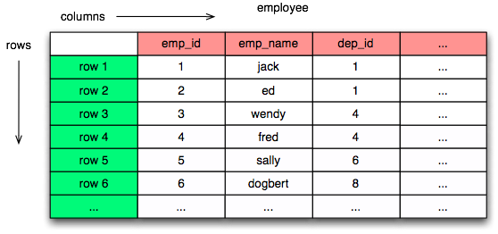
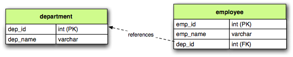
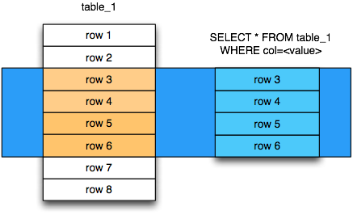
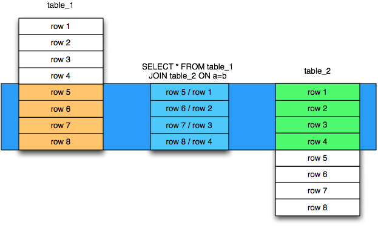
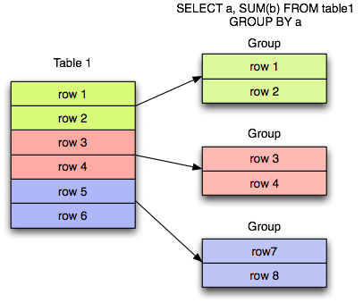

Introduction
This document is a brief overview of key relational database concepts, including SQL basics as well as the basics
of transactions. SQLAlchemy is somewhat unique in that it doesn’t try to hide any of these concepts
within regular use, and the developer of a SQLAlchemy-enabled application will
be dealing with concepts of SQL, transactions, and Python expressions and object
models, all at the same time. While this may sound daunting, it is in practice actually a better way
to work, instead of relying upon a tool to hide away the existence of the relational database. Best
of all, once the practice of integrating all three techniques is mastered,
you’ll be able to call yourself an Alchemist :).
The Introduction to SQLAlchemy tutorial starts off with the assumption that the student is familiar
with the concepts outlined in this document - if they’re new to you, spending some time familiarizing
will be time well spent, and if they’re old hat, you’ll be in good shape to jump right into the
SQLAlchemy tutorial.
Throughout this document, we’ll try to refer heavily to the Glossary, which
tries to provide an overview and additional links on just about every concept.
Relational Schemas
The schema refers to a fixed structure configured within a database
that defines how data will be represented. The most fundamental unit
of data within a schema is known as the table.
Table
The Table is the basic unit of storage in a relational database, representing a set of rows.

The table encompasses a series of columns, each of which describes a particular type
of data unit within the table. The data within the table is then organized into
rows, each row containing a single value for each column represented in the table.
DDL
At the SQL console, we create a new table as a permanent fixture within a
database schema using the CREATE TABLE
statement. The CREATE TABLE statement is an example of Data Definition Language, or
DDL, which is a subset of SQL:
CREATE TABLE employee (
emp_name VARCHAR(30),
dep_id INTEGER
)
Primary Keys
A table can be created with constraints, which place rules on
what specific data values can be present in the table. One of the
most common constraints is the primary key constraint, which enforces that every
row of the table must have a uniquely identifying value, consisting of one
or more columns, where the values can additionally not be NULL.
A primary key that uses more than one column to produce
a value is known as a composite primary key.
It is a best practice that all tables in a relational database
contain a primary key. Two varieties of primary key are surrogate primary key
and natural primary key, where the former is specifically a “meaningless”
value, and the latter is “meaningful”. Which style to use is a hotly debated
topic; the surrogate key is generally chosen for pragmatic reasons, including
memory and index performance as well as simplicity when dealing with updates,
whereas the natural primary key
is often chosen for being more “correct” and closer to the relational ideal.
We restate our employee table below adding a surrogate integer primary key
on a new column emp_id:
CREATE TABLE employee (
emp_id INTEGER,
emp_name VARCHAR(30),
dep_id INTEGER,
PRIMARY KEY (emp_id)
)
Foreign Keys
Once a table is defined as having a primary key constraint,
another table can be constrained such that its rows may refer
to a row that is guaranteed to be present in this table.
This is implemented by establishing a column or columns in the
“remote”, or child, table whose values must match a value of the primary
key of the “local”, or parent, table. Both sets of columns are then named as
members of a foreign key constraint, which instructs
the database to enforce that values in these “remote” columns are guaranteed
to be present in the “local” table’s set of primary key columns.
This constraint takes effect at every turn; when rows are inserted
into the remote table, when rows are modified in the remote table,
as well as when an attempt is made to delete or update rows in the
parent table, the database ensures that any value subject to the
foreign key constraint be present in the set of referenced columns,
or the statement is rejected.
A foreign key constraint that refers fully to a
composite primary key is predictably known as a composite foreign key.
It is also possible, in a composite scenario, for a foreign key constraint
to only refer to a subset of the primary key columns in the
referenced table, but this is a highly unusual case.
Below,
the figure illustrates a
department table which is referred to by the employee table by
relating the employee.dep_id column to the department.dep_id
column:

The above schema can be created using DDL as follows:
CREATE TABLE department (
dep_id INTEGER,
dep_name VARCHAR(30),
PRIMARY KEY (dep_id)
)
CREATE TABLE employee (
emp_id INTEGER,
emp_name VARCHAR(30),
dep_id INTEGER,
PRIMARY KEY (emp_id),
FOREIGN KEY (dep_id)
REFERENCES department(dep_id)
)
Normalization
The structure of a relational schema is based on a system known as relational
algebra. The central philosophy that drives the design of a relational schema
is a process known as normalization, which like most fundamental computer
science concepts is an entire field of study onto itself. In practice however,
normalization usually boils down to a few simple practices that become second
nature in not too much time.
The general idea of normalization is to eliminate the repetition of data, so that
any one particular piece of information is represented in exactly one place.
By doing so, that piece of information becomes one of many atomic units by which
data can be searched and operated upon. For example, if hundreds of records
all refer to a particular date record, we can correlate all those records on this
single date record strictly based on the association of those identities.
A typical example of denormalized data looks like:
Employee Language
------------------
name language department
------- -------- -------------
Dilbert C++ Systems
Dilbert Java Systems
Wally Python Engineering
Wendy Scala Engineering
Wendy Java Engineering
The table’s rows can be uniquely identified by the composite of the “name” and
“language” columns, which therefore make up the table’s candidate key.
Normalization theory would claim the above table violates “second normal form”
because the “non prime” attribute “department” is logically dependent
only on the “name” column, which is a subset of the candidate key.
(Note that the author is carefully parsing the Wikipedia page for normalization
here in order to state this correctly). A proper normalization would use two
tables along the lines of the following:
Employee Department
-------------------
name department
-------- -----------
Dilbert Systems
Wally Engineering
Wendy Engineering
Employee Language
------------------
name language
-------- --------
Dilbert C++
Dilbert Java
Wally Python
Wendy Scala
Wendy Java
While the formal reasoning behind the above change may be difficult to
parse, a visual inspection of the data reveals more obviously
how the second form is an improvement; the original version repeats
duplicate associations between “name” and “department” many times
according to how many distinct “language” values correspond to a name;
whereas the second version uses separate tables so that each “name/department”
and “name/language” association can be expressed independently.
The concept of data constraints, particularly the primary key constraint
and the foreign key constraint, are designed to work naturally with
the concept of normalization. Constraints would be applied to the above
schema by establishing “Employee Department->name” as a primary key,
establishing “Employee Language->name, language” as a composite primary key,
and then creating a foreign key such that “Employee Language->name” must
refer to “Employee Department->name”. When a schema resists being
organized into simple primary and foreign key relationships, that’s often
a sign that it isn’t strongly normalized.
The Wikipedia page on normalization (http://en.wikipedia.org/wiki/Database_normalization)
is a great place to learn more.
Data Manipulation Language (DML)
Once we have a schema defined, data can be placed into the tables
and also modified using another subset of SQL called data manipulation language,
or DML.
Inserts
New rows are added to a table using the INSERT statement. The INSERT statement
contains a VALUES clause which refers to the actual values to be inserted
into each row.
INSERT INTO employee (emp_id, emp_name, dep_id)
VALUES (1, 'dilbert', 1);
INSERT INTO employee (emp_id, emp_name, dep_id)
VALUES (2, 'wally', 1);
Auto Incrementing Integer Keys
Most modern databases feature a built-in system of generating incrementing integer
values, which are in particular usually used for tables that have surrogate integer
primary keys, such as our employee and department tables. For example, when using
SQLite, the above emp_id column will generate an integer value automatically; when
using MySQL, an integer primary key declared with AUTO INCREMENT will do so as well;
and on Postgresql, declaring a primary key with the datatype SERIAL will have
the same end effect. When using these so-called “auto incrementing” primary key
generators, we omit the column from the INSERT statement:
INSERT INTO employee (emp_name, dep_id)
VALUES ('dilbert', 1);
INSERT INTO employee (emp_name, dep_id)
VALUES ('wally', 1);
Databases that feature primary key generation systems will also
feature some means of acquiring the “generated” integer identifier
after the fact, using non-standard SQL extensions and/or functions.
When using Postgresql, one such way of reading these generated identifiers
is to use RETURNING:
INSERT INTO employee (emp_name, dep_id)
VALUES ('dilbert', 1) RETURNING emp_id;
emp_id
------
1
While every database features a different system of generating and retrieving
these keys, we’ll generally refer to the style above where the integer primary key
can be omitted from an INSERT. When using SQLAlchemy, one of the most fundamental
features it provides is a consistent and transparent system
of utilizing the wide variety of key generation and retrieval schemes.
Updates
The UPDATE statement changes the contents of an existing row, using a WHERE clause
to identify those rows which are the target of the update, and a SET clause which
identifies those columns which should be modified and to what values:
UPDATE employee SET dep_id=7 WHERE emp_name='dilbert'
When an UPDATE statement like the above one executes, it may match any number of
rows, including none at all. An UPDATE statement typically has a “row count”
value associated with a particular execution, which indicates the number of
rows that matched the WHERE criteria, and therefore represents the number
of rows that were subject to the SET clause.
Deletes
The DELETE statement removes rows. Like the UPDATE statement, it also uses
a WHERE clause to identify those rows which should be deleted:
DELETE FROM employee WHERE dep_id=1
Above, all employee records within department id 1 will be deleted.
Queries
The key feature of SQL is its ability to issue queries. The SELECT
statement is the primary language construct providing this feature,
and is where we spend most of our time when
using relational databases, allowing us to query for rows in tables.
An illustration of a SELECT statement is in the figure below. Like
the UPDATE and DELETE statements, it also features a WHERE clause which is the
primary means of specifying which rows should be selected.

An example of a SELECT that chooses the rows where dep_id is equal
to the value 12:
SELECT emp_id, emp_name FROM employee WHERE dep_id=12
The key elements of the above SELECT statement are:
- The FROM clause determines the table or tables from which we are
to select rows.
- The WHERE clause illustrates a criterion which we use to filter
those rows retrieved from the tables in the FROM clause
- The columns clause is the list of expressions following the SELECT
keyword and preceding the FROM keyword, and indicates
those values which we’d like to display given each row that we’ve
selected.
With the above rules, our statement might return to us a series of rows
that look like this, if the emp_name column values wally, dilbert,
and wendy were all those linked to dep_id=12:
emp_id emp_name
-------+------------
1 | wally
2 | dilbert
5 | wendy
Ordering
The ORDER BY clause may be applied to a SELECT statement to determine the
order in which rows are returned. Ordering is applied to the SELECT after
the WHERE clause. Below, we illustrate our statement loading employee
records ordered by name:
SELECT emp_id, emp_name FROM employee WHERE dep_id=12 ORDER BY emp_name
Our result set then comes back like this:
emp_id emp_name
-------+------------
2 | dilbert
1 | wally
5 | wendy
Joins
A SELECT statement can use a join to produce rows from two tables at
once, usually joining along foreign key references. The JOIN keyword
is used in between two table names inside the FROM clause of a SELECT
statement. The JOIN also usually includes an ON clause, which
specifies criteria by which the rows from both tables are correlated
to each other.
The figure below illustrates the behavior of a join, by indicating in the
central blue box those rows which are composites of rows from both “table_1” and “table_2”
and which satisfy the ON clause:

It’s no accident that the blue box looks a lot like a table. Even though above,
only “table_1” and “table_2” represent fixed tables, the JOIN creates
for us what is essentially a derived table, a list of rows that we could
use in subsequent expressions.
Using our department / employee example, to select employees along with their
department name looks like:
SELECT e.emp_id, e.emp_name, d.dep_name
FROM employee AS e
JOIN department AS d
ON e.dep_id=d.dep_id
WHERE d.dep_name = 'Software Artistry'
The result set from the above might look like:
emp_id emp_name dep_name
-------+------------+--------------------
2 | dilbert | Software Artistry
1 | wally | Software Artistry
5 | wendy | Software Artistry
Left Outer Join
A variant of the join is the left outer join. This structure allows
rows to be returned from the table on the “left” side which don’t have any
corresponding rows on the “right” side. For instance, if we wanted to select
departments and their employees, but we also wanted to see the names of departments
that had no employees, we might use a LEFT OUTER JOIN:
SELECT d.dep_name, e.emp_name
FROM department AS d
LEFT OUTER JOIN employee AS e
ON d.dep_id=e.dep_id
Supposing our company had three departments, where the “Sales” department
was currently without any employees, we might see a result like this:
dep_name emp_name
--------------------+------------
Management | dogbert
Management | boss
Software Artistry | dilbert
Software Artistry | wally
Software Artistry | wendy
Sales | <NULL>
There is also a “right outer join”, which is the same as left outer join except
you get all rows on the right side. However, the “right outer join” is not
commonly used, as the “left outer join” is widely accepted as proper convention,
and is arguably less confusing than a right outer join (in any case, right outer joins
confuse the author!).
Aggregates
An aggregate is a function that produces a single value, given
many values as input. A commonly used aggregate function is the count()
function which, given a series of rows as input, returns the count of those
rows as an integral value. The count() function accepts as an argument any
SQL expression, which we often pass as the wildcard string * that essentially
means “all columns” - unlike most aggregate functions, count() doesn’t
evaluate the meaning its argument, it only counts how many times it is called:
SELECT count(*) FROM employee
?count?
-------
18
Another aggregate expression might return to us the average number
of employees within departments. To accomplish this, we also make use of
the GROUP BY clause, described below, as well as a subquery:
SELECT avg(emp_count) FROM
(SELECT count(*) AS emp_count
FROM employee GROUP BY dep_id) AS emp_counts
?avg?
-----
2
Note the above query only takes into account non-empty departments. To
include empty departments would require a more complex sub-query that
takes into account rows from department as well.
Grouping
The GROUP BY keyword is applied to a SELECT statement, breaking
up the rows it selects into smaller sets based on some criteria. GROUP BY
is commonly used in conjunction with aggregates, as it can apply individual
subsets of rows to the aggregate function, yielding an aggregated return value
for each group. The figure below illustrates the rows from a table being broken
into three sub-groups, based on the expression “a”, and then the SUM()
aggregate function applied to the value of “b” for each group:

An example of an aggregation / GROUP BY combination that gives us the count of employees
per department id:
SELECT count(*) FROM employee GROUP BY dep_id
The above statement might give us output such as:
?count? | dep_id
---------+----------
2 | 1
10 | 2
6 | 3
9 | 4
Having
After we’ve grouped things with GROUP BY and gotten aggregated values
by applying aggregate functions, we can be filter those results using the HAVING keyword.
We can take the above result set and return only those
rows where more than seven employees are present:
SELECT count(*) as emp_count FROM employee GROUP BY dep_id HAVING emp_count > 7
The result would be:
emp_count | dep_id
-----------+----------
10 | 2
9 | 4
SELECT Process Summary
It’s very helpful (at least the author thinks so) to keep straight exactly
how SELECT goes about its work when given a combination of aggregation and
clauses (such as WHERE, ORDER BY, GROUP BY, HAVING).
Given a series of rows:
emp_id emp_name dep_id
-------+------------+----------
1 | wally | 1
2 | dilbert | 1
3 | jack | 2
4 | ed | 3
5 | wendy | 1
6 | dogbert | 4
7 | boss | 3
We’ll analyze what a SELECT statement like the following does in a logical sense:
SELECT count(emp_id) as emp_count, dep_id
FROM employee
WHERE dep_id=1 OR dep_id=3 OR dep_id=4
GROUP BY dep_id
HAVING emp_count > 1
ORDER BY emp_count, dep_id
the FROM clause is operated upon first. The table or tables which the statement is to
retrieve rows from are resolved; in this case, we start with the set of all rows
contained in the employee table:
... FROM employee ...
emp_id emp_name dep_id
-------+------------+----------
1 | wally | 1
2 | dilbert | 1
3 | jack | 2
4 | ed | 3
5 | wendy | 1
6 | dogbert | 4
7 | boss | 3
For the set of all rows in the employee table, each row is tested against the
criteria specified in the WHERE clause. Only those rows which evaluate to “true”
based on this expression are returned. We now have a subset of rows retrieved
from the employee table:
... WHERE dep_id=1 OR dep_id=3 OR dep_id=4 ...
emp_id emp_name dep_id
-------+------------+----------
1 | wally | 1
2 | dilbert | 1
4 | ed | 3
5 | wendy | 1
6 | dogbert | 4
7 | boss | 3
With the target set of rows assembled, GROUP BY then organizes the rows into groups
based on the criterion given. The “intermediary” results of this grouping will be passed
on to the next step behind the scenes. Were we able to look into the pipeline, we’d see
something like this:
... GROUP BY dep_id ...
"group" emp_id emp_name dep_id
----------+---------+------------+---------
dep_id=1 | 1 | wally | 1
| 2 | dilbert | 1
| 5 | wendy | 1
----------+---------+------------+---------
dep_id=3 | 4 | ed | 3
| 7 | boss | 3
----------+---------+------------+---------
dep_id=4 | 6 | dogbert | 4
Aggregate functions are now applied to each group. We’ve passed
emp_id to the count() function, which means for group “1” it will
receive the values “1”, “2”, and “5”, for group “3” it will
receive the values “4” and “7”, for group “4” it receives the value
“6”. count() doesn’t actually care
what the values are, and we could as easily have passed in *, which
means “all columns”. However, most aggregate functions do care
what the values are, including functions like max(), avg()
min() etc., so it’s usually a good habit to be aware of the
column expression here. Below, we observe that the “emp_id” and
“emp_name” columns go away, as we’ve aggregated on the count:
... count(emp_id) AS emp_count ...
emp_count dep_id
------------+-----------
3 | 1
------------+-----------
2 | 3
------------+-----------
1 | 4
Almost through all of our keywords, HAVING takes effect once we have the aggregations,
and acts like a WHERE clause for aggregate values. In our statement, it filters
out groups that have one or fewer members:
... HAVING emp_count > 1 ...
emp_count dep_id
------------+-----------
3 | 1
------------+-----------
2 | 3
Finally, ORDER BY is applied. It’s important to remember in SQL that
relational algebra is a language of sets, which are inherently un-ordered.
In the typical case, all of the work of selecting, aggregating, and filtering
our data are done before any ordering is applied, and only right before
the final results are returned to us are they ordered:
... ORDER BY emp_count, dep_id
emp_count dep_id
------------+-----------
2 | 3
------------+-----------
3 | 1
ACID Model
The flip side to the relational model employed by relational databases is the
so called transactional model most of them provide. The acronym ACID
refers to the principal properties of relational database transactions
(as well as transactions for any kind of hypothetical database).
Atomicity
Atomicity allows multiple statements to proceed within a particular demarcation known
as a transaction, which has a single point of completion known as a commit.
A transaction is committed once all the operations within it have completed successfully.
If any of the operations fail, the transaction can instead be reverted using a rollback,
which reverses all the steps that have proceeded within the transaction, leaving the state
of the database unchanged relative to before the transaction began. Atomicity refers
to the fact that all of these steps proceed or fail as a single unit; it’s not possible for
some of the steps to succeed without all of them succeeding.
Consistency
Consistency encompasses the ability of the database to ensure that it
always remains in a valid state after a transaction completes successfully.
Key elements used to provide consistency are constraints, cascades,
and triggers.
Data constraints, the most common system used to define consistency,
establish rules that are checked against changes in data as those changes
are invoked against the database. Typical constraints include:
- NOT NULL constraint - value in a column may never be NULL or non-present.
- primary key constraint - each row must contain a single- or multi-column value
that is unique across all other rows in the table, and is the single value
that logically identifies the information stored in that row.
- foreign key constraint - a particular column or columns must contain
a value that exists elsewhere in a different row, usually of a different table.
The foreign key constraint is the building block by which the rows of many
flat tables can be composed together to form more intricate geometries.
- unique constraint - similar to the primary key constraint, the unique
constraint identifies any arbitrary column or set of columns that also
must be unique throughout the whole table, without themselves comprising
the primary key.
- check constraint - any arbitrary expression can be applied to a row,
which will result in that row being rejected if the expression does not
evaluate to “true”.
Constraints are a sometimes misunderstood concept that when properly used can give
a developer a strong “peace of mind”, knowing that even in the face of errors,
mistakes, or omissions within applications that communicate with the database,
the database itself will remain in a consistent state, rather than running the
risk of accumulating ongoing data errors that are only detected much later when
it’s too late. This “peace of mind” allows us to write and test our applications
more quickly and boldly than we would be able to otherwise; more quickly because
the relational database already does lots of the integrity checking we’d otherwise
have to write by hand, and more boldly because there is much less chance
that code errors can result in corruption of data as if we hadn’t used constraints.
Isolation
Isolation is a complex subject which in a general sense refers to the interactivity
between concurrent transactions, that is, more than one transaction occuring at the
same time. It is focused on the degree to which the work being performed by a particular
transaction may be viewed by other transactions going on at the same time.
The isolation of concurrent transactions is an important area of consideration when
constructing an application, as in many cases the decisions that are made within
the scope of a transaction may be affected by this cross-transaction visibility;
the isolation behavior can also have a significant impact on database performance.
While there are techniques by which one doesn’t have to worry too often about isolation,
in many cases dealing with the specifics of isolation is unavoidable, and no one
isolation behavior is appropriate in all cases.
In practice, the level of isolation between transactions is usually placed into
four general categories (there are actually a lot more categories for people who
are really into this stuff):
Read uncommitted - This is the lowest level of isolation. In this mode,
transactions are subject to so-called dirty reads, whereby
the work that proceeds within a transaction is plainly visible to other transactions
as it proceeds. With dirty reads, a transaction might UPDATE a row with updated
data, and this updated row is now globally visible by other transactions. If the
transaction is rolled back, all the other transactions will be exposed to this
rollback as well.
Read committed - In read committed, we’re no longer subject to dirty reads, and
any data that we read from concurrent transactions is guaranteed to have been
committed. However, as we proceed within our own transaction, we can still see
the values of rows and SELECT statements change, as concurrent transactions
continue to commit modifications to rows that we’re also looking at.
Repeatable Read - The next level operates at the row level, and adds the behavior
such that any individual row that we read using a SELECT statement will remain
consistent from that point on, relative to our transaction. That is, if we read
the row with primary key “5” from the employee table, and in the course of
our work a concurrent transaction updates the emp_name column from “Ed” to
“Edward”, when we re-SELECT this row, we will still see the value “Ed” - that is,
the value of this row remains consistent from the first time we read it forward.
If we ourselves attempt to update the row again, we may be subject to a conflict when
we attempt to commit the transaction.
Within repeatable read, we are still subject to the concept of a so-called
phantom read - this refers to a row that we see in one SELECT statement that
we later (or previously) do not see in a different SELECT statement, because
a concurrent transaction has deleted or inserted that row since we last selected
with a given set of criteria.
Serializable - Generally considered to be the highest level of isolation, the rough
idea of serializable isolation is that we no longer have phantom reads -
if we select a series of N rows using a SELECT statement, we can be guaranteed that
we will always get those same N rows when emitting a subsequent SELECT of the
same criteria, even if concurrent transactions have INSERTed or DELETed rows
from that table.
The impact of using a higher level of isolation depends much on the specifics of
the database in use. Generally, lower levels of isolation are
associated with higher performance and a reduced chance of deadlocks.
Historically, this is due to the fact that
a lower level of isolation has less of a need to synchronize concurrent operations
using locks. However, most modern relational databases employ a
concept known as multi version concurrency control in order to
reduce or eliminate the need for locking, by assigning
to each transaction a unique identifier that is then applied to copies of rows
created locally to each transaction. As a transaction commits its data, its private copies
of rows become the official “rows of record” for the database as a whole.
An MVCC scheme may still introduce performance overhead with higher isolation
levels, as such systems must monitor and report so-called
serialization failures, which are the rejection of transactions that
conflict with another one executing concurrently.
Durability
Durability basically means that relational databases provide a guarantee that once a
transaction COMMIT has succeeded, the data is safely written to disk, and the chance of
that data being lost due to a system failure is low to nil. Durability tends to be something
most developers take for granted when working with relational databases; however, in recent
years it’s been discussed a lot more with the rise of so-called NoSQL databases, which in some
cases attempt to scale back the promise of durability in exchange for faster transaction
throughput.